Microsoft has announced client-driven compliance evaluation for Windows devices to reduce delays in compliance reporting. Supported Windows devices can detect important local state changes and proactively request a new compliance evaluation. That means Intune can learn faster when a device becomes unhealthy and when it has been fixed again. The Intune Management Extension already contains the client-side component that makes this possible. Inside the code, Microsoft calls that component ComplianceMonitor.
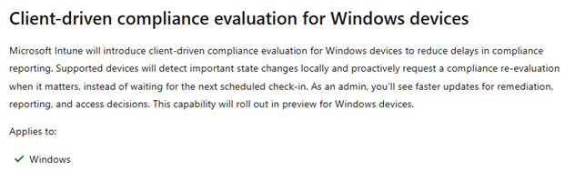

With Microsoft also releasing some Docs... Well.. Let’s start investigating how the Client-Driver compliance evaluation works under the hood, shall we?
The Compliance Evaluation Delay
Windows compliance evaluation has always depended heavily on timing. A device can report that its firewall, TPM, Secure Boot, or Defender configuration is healthy, then drift away from that state shortly afterward. Intune continues to show the last reported compliance result until Windows performs another compliance evaluation and sends fresh information.
The same delay exists when the problem is fixed. A device might already be healthy again, while Intune still considers it noncompliant because the recovery has not yet been reported. Client-driven compliance evaluation is designed to reduce that gap in both directions. IME version 1.103.101.0 contains a component called ComplianceMonitor. Its purpose is to support Intune client-driven compliance evaluation by reducing the time between a local Windows state change and the next compliance evaluation.
The Compliance Monitor observes selected Windows security signals locally. When one changes, it automatically requests a new compliance evaluation by starting a Windows MDM device check-in. The user does not need to open Company Portal, and the administrator does not need to initiate another sync.
Inside the IME Compliance Monitor
The Compliance Monitor runs inside Microsoft.Management.Services.IntuneWindowsAgent.exe as part of the existing Intune Management Extension service. It is the client-side component that watches for changes that may require a fresh compliance evaluation.

The Client-Side Compliance Evaluation implementation is divided into several classes. When the IME service is executed, the Compliance Monitor Launcher control starts up and retries. The Compliance Monitor owns the timer and executes each monitoring cycle. The Compliance Setting Helper reads the Windows signals and detects drift. From there, the DciHelper (Device Check-In Helper) decides whether to simulate, defer, or invoke a new MDM check-in. Compliance Monitor Auditing aggregates operational telemetry…. For those who prefer my paint skill… The complete client-driven compliance evaluation flow looks like this:
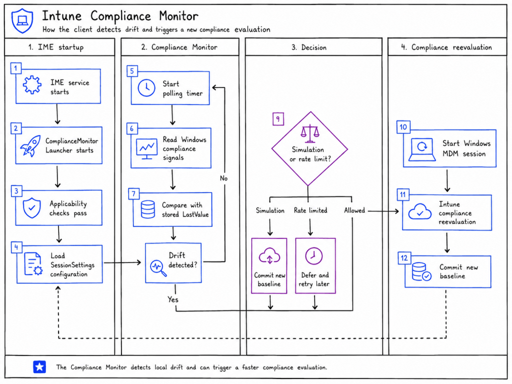

Starting the IME Compliance Monitor
The monitor is started by the IME service through ComplianceMonitorLauncher. Before it begins polling, the launcher checks whether client driven compliance evaluation is enabled for the account.

If the Real Time Compliance feature is unavailable, the launcher does not disappear permanently. It arms a recurring retry timer and checks again later. The launcher interval in this build is one hour.

Once the feature becomes available, it attempts to launch the monitor again. The launch operation is protected against duplicate starts, so another attempt has no effect when the monitor is already running. The device must also pass several local applicability checks. The operating system build must be at least 15063, the device must have an MDM enrollment, and Microsoft Defender must be the active antivirus provider.
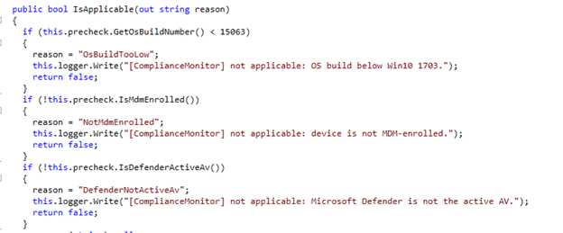

If one of those checks fails, the monitor logs the failed precondition and does not start. The Defender requirement is particularly interesting because it limits the current implementation even when some of the other monitored signals, such as BitLocker or TPM, would still be available.
When all checks pass, the monitor initializes its registry store, auditing components, setting readers, DCI helper, and timer. The log then records: [ComplianceMonitor] Start entered.

Delivering the Compliance Monitor Configuration
The operational configuration for client driven compliance evaluation comes from the Intune service through the normal Sidecar gateway response.

Once IME stores the service settings on the device, the Compliance Monitor can read them from HKLM\SOFTWARE\Microsoft\IntuneManagementExtension\SessionSettings.
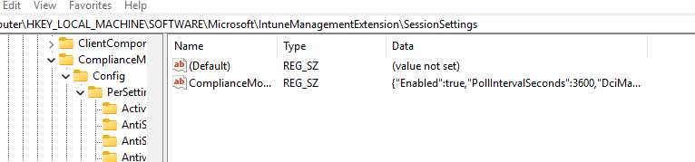

The Compliance Monitor reads a specific value named: ComplianceMonitorConfigJson
A valid configuration looks like this:
{
“Enabled”: true,
“PollIntervalSeconds”: 60,
“DciMaxCheckInsPerHourPerDevice”: 2,
“Settings”: [
“ActiveFirewallRequired”,
“OsBuildVersion”
],
“PerSetting”: {
“ActiveFirewallRequired”: {
“Enabled”: true
},
“OsBuildVersion”: {
“Enabled”: true
}
}
}
The Settings collection alone is not enough. During each cycle, the monitor checks whether every listed setting also exists in PerSetting and has Enabled set to true. A name without the corresponding per setting configuration is silently filtered out.
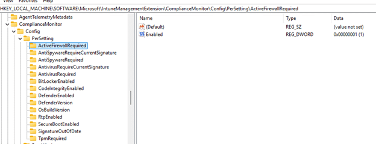

After parsing the JSON, the monitor saves a local copy beneath:
HKLM\SOFTWARE\Microsoft\IntuneManagementExtension\ComplianceMonitor\Config
The enabled state and numeric values are stored as DWORDs. The active setting names are stored as a semicolon-separated string, while each per setting state is persisted under Config\PerSetting.
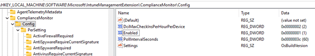

If the service configuration is absent during a later cycle, the monitor logs that it will retry. It can continue using the previously persisted local configuration.
Polling for Compliance Changes
The default polling interval is 300 seconds. The monitor accepts values between 60 and 3,600 seconds. With the minimum interval, a supported local change can be detected within approximately 60 seconds and can then start a new compliance evaluation.
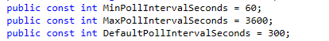

When the timer is created, its initial due time is randomized within the polling interval. This prevents many devices from starting their compliance observations at exactly the same moment.
Only one monitoring cycle can run at a time. If a timer callback arrives while the previous cycle is still active, the new cycle is skipped. This prevents slow WMI operations from producing overlapping evaluations.
At the beginning of every cycle, the monitor refreshes its relevant feature state and ingests the latest server configuration.

It stops itself if the master feature is disabled or if the server configuration contains Enabled=false. The active setting list is validated and deduplicated. The monitor processes no more than 14 settings in one cycle and limits concurrent observation work to eight readers.
Reading the Supported Compliance Signals
The monitor contains 14 recognized setting names that can be used to detect changes that may require a new compliance evaluation. These are ActiveFirewallRequired, DefenderEnabled, RtpEnabled, DefenderVersion, SignatureOutOfDate, AntivirusRequired, AntivirusRequireCurrentSignature, AntiSpywareRequired, AntiSpywareRequireCurrentSignature, BitLockerEnabled, SecureBootEnabled, CodeIntegrityEnabled, TpmRequired, and OsBuildVersion.

Firewall, antivirus, antispyware, BitLocker, and Secure Boot are read through the MDM Bridge WMI provider in root\cimv2\mdm\dmmap. Defender status, version, security intelligence age, and real time protection use the Defender WMI providers. Code Integrity comes from Win32_DeviceGuard, while TPM state comes from Win32_Tpm.
The OS build reader combines two registry values:
HKLM\SOFTWARE\Microsoft\Windows NT\CurrentVersion
CurrentBuild
UBR
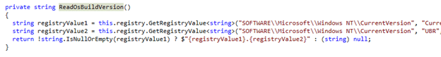

On our test device, those values produced: 26200.8655
If a setting name is not recognized, the monitor logs that the setting is unknown and skips it. The setting names must also pass the allowlist expression [A-Za-z0-9_]{1,64}.
Storing the Compliance Baseline
The Compliance Monitor is a change detector for client-driven compliance evaluation. It does not contain the desired policy values and does not calculate the final compliant or noncompliant result itself. Instead, it remembers the last value observed for every setting as its baseline:
HKLM\SOFTWARE\Microsoft\IntuneManagementExtension
\ComplianceMonitor\Settings\<SettingName>\LastValue
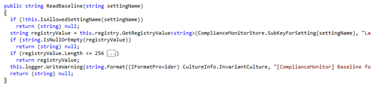

During a cycle, ComplianceSettingHelper reads the current value and asks ComplianceMonitorStore for the baseline. It compares both strings using an ordinal comparison.
When the strings match, nothing has changed. When they differ, the helper creates a DriftRecord containing the setting name, old value, and new value.
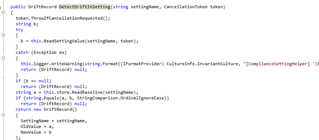

A baseline longer than 256 characters is rejected and treated as missing. This is another defensive measure intended to prevent corrupted or manipulated registry data from affecting the component. The monitor does not need to know whether the new value is good or bad. It only needs to know that it changed.
A firewall status changing from 0 to 1 is drift. Status 0 means the firewall is enabled and monitored, while 1 means it is disabled. When the firewall becomes healthy again, the value changes from 1 back to 0. That recovery is also drifting and deserves another compliance check.
Deciding When to Request a Compliance Evaluation
The detected drift records are handed to DciHelper. The code does not explicitly expand the acronym DCI, but the implementation consistently leads to a device check-in. The helper decides whether the change should start a real MDM session and a fresh compliance evaluation, or whether the request must be simulated or deferred.
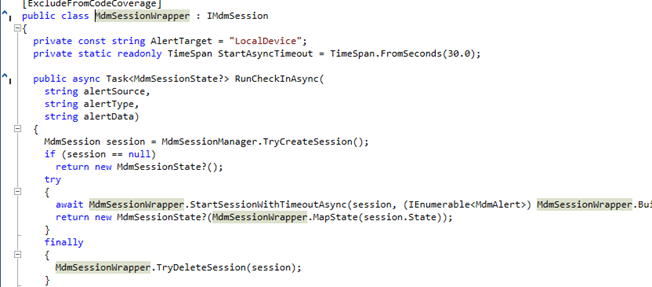

When there are no drift records, the cycle ends as idle. When simulation mode is active, DciHelper records:[DciHelper] decision=Simulated drifts=[OsBuildVersion]

It then writes the new values to the baseline store. No MDM check-in or compliance evaluation is triggered. When simulation is disabled, the helper checks its hourly device limit. The default is two additional device check-ins per hour, although the configuration accepts values between zero and ten.

The rate window information is stored beneath:
HKLM\SOFTWARE\Microsoft\IntuneManagementExtension
\ComplianceMonitor\Config\RateWindow
{kind=link}
WindowStartTicks is stored as a string containing UTC ticks, while Count is a DWORD. The helper validates the persisted state before trusting it. A window start may not be more than five minutes in the future or more than two hours old, and the count cannot be negative.
Invalid or missing state is handled conservatively. The helper initially assumes the configured cap has been reached, preventing corrupted rate information from creating an uncontrolled check-in loop. When the window expires or is reset, it creates a fresh one-hour window with a count of zero.
If the cap has already been reached, the helper records:
[DciHelper] decision=DeviceCapReachedDeferred
{kind=link}
The changed baseline is not committed, allowing the same drift to be reconsidered during a later cycle.
Starting the MDM Compliance Check In
When another check-in is allowed, DciHelper creates a DciTrigger and prepares the Windows MDM alert that requests a new compliance evaluation.
Source = IntuneRealTimeCompliance
Type = DriftRetry
Target = LocalDevice
Mark = 4
Format = 0
Data = RealTimeCompliance drift retry
{kind=link}
A unique correlation ID is generated for the request. The local reason contains the detected setting names, such as Drift: OsBuildVersion.
The trigger calls MdmSessionWrapper.RunCheckInAsync(). That wrapper uses the Windows MDM API to create a session, adds the alert, and calls MdmSession.StartAsync().
{kind=link}
Windows then contacts the MDM endpoint associated with the device’s existing enrollment. The Compliance Monitor does not contain a hardcoded Intune URL and does not send its observations directly to the Sidecar service. It relies on Windows DMClient and the existing MDM enrollment.
When Windows accepts and completes the trigger operation, IME records: [DciHelper] decision=Invoked drifts=[OsBuildVersion] corrId=…
{kind=link}
A successful trigger causes two local changes. The current observed values are committed as the new baselines, and the rate window count is increased.
If the MDM session fails or times out, the helper records decision=TriggerFailed together with the HRESULT. It does not commit the changed baseline, which allows the drift to be retried.
Reporting the Compliance Evaluation to Intune
The Compliance Monitor does not send a final result saying that a device is compliant or noncompliant. Windows still reports the current compliance information, and Intune still evaluates that information against the assigned compliance policy.
The monitor has a more focused role. It recognizes that information used during compliance evaluation has changed and starts an additional MDM session so that the device can be evaluated again.
During that session, Windows reevaluates and reports its current compliance information. Intune receives the updated state and applies the assigned policy requirements. When the local value changes again because the problem was fixed, the monitor starts another MDM session so that the recovery can trigger a new compliance evaluation.
This is how a device can move toward noncompliance and back toward compliance without waiting for the normal compliance evaluation cycle or requiring someone to press Sync.
With a 60 second polling configuration, the local drift should normally be detected within that interval. The initial timer randomization, MDM session duration, Intune processing, and portal summarization can add more time. The correct claim is therefore that detection can happen within approximately 60 seconds, not that the portal is guaranteed to update within exactly one minute.
What Client-Driven Compliance Evaluation Means
The Compliance Monitor is the client-side change detector behind Intune client-driven compliance evaluation. It monitors key Windows security signals, including Firewall, Defender, BitLocker, Secure Boot, TPM, and the Windows build.
When one of these settings changes, the monitor automatically starts a new Windows MDM device check-in. Windows reports the latest information to Intune, and Intune performs a fresh compliance evaluation against the assigned policy.
This works in both directions. If a setting becomes unhealthy, Intune can detect the device as noncompliant much sooner. When the problem is fixed, the monitor detects the recovery and starts another MDM check in, allowing a new compliance evaluation without waiting for the normal sync schedule.